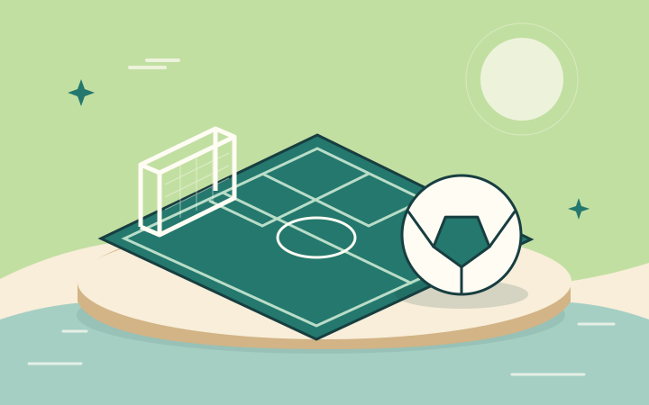
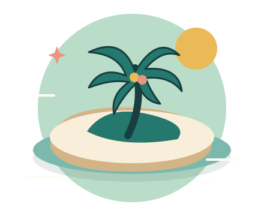
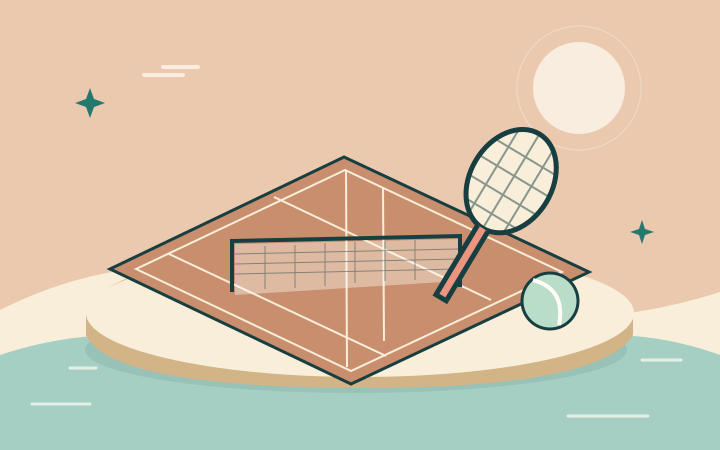
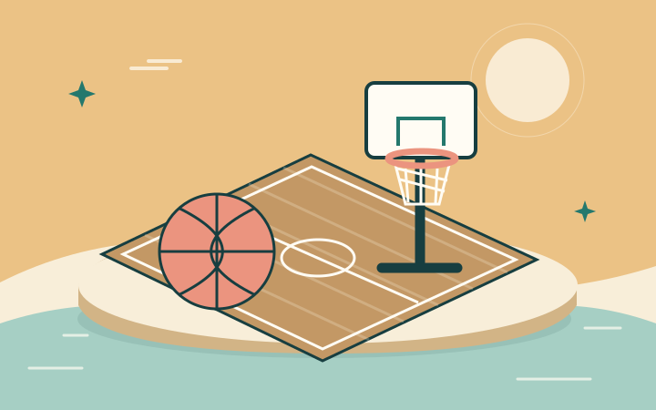
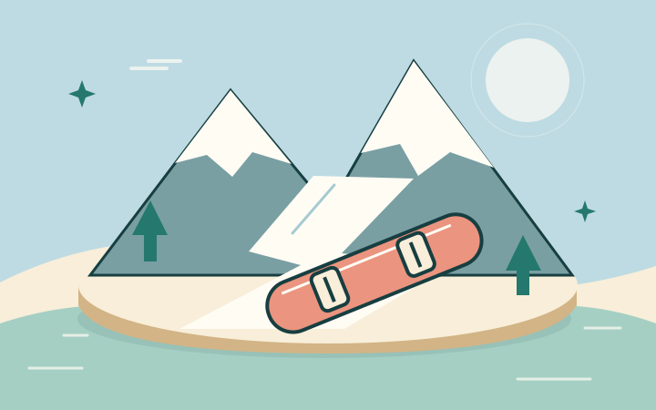
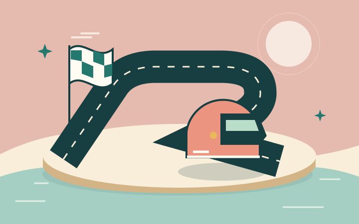
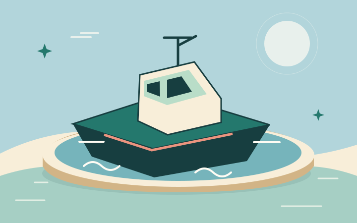
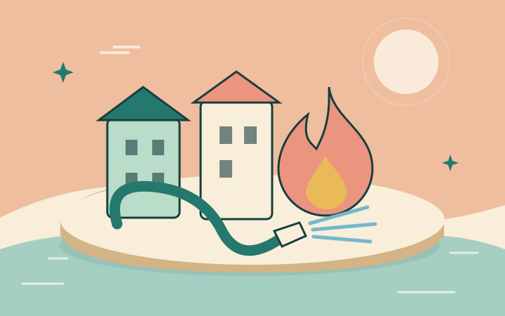
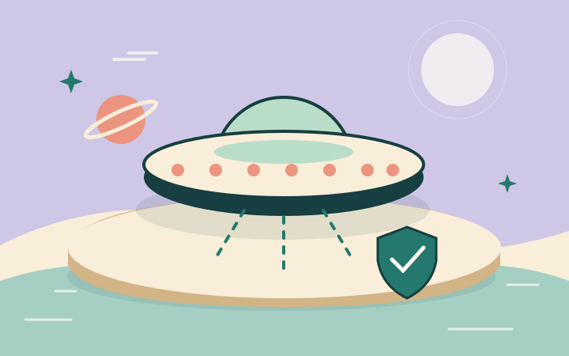
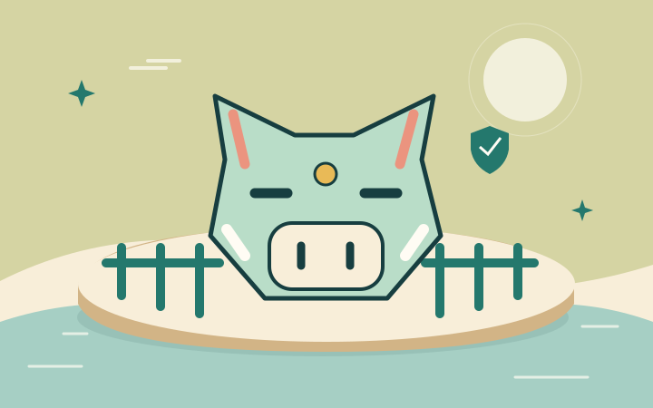

ספורט
ליגת האי
הקבוצה שלכם. הדרך לאליפות.
ערכת ממשק בגווני ים, חול ואלמוג.
מהבחירה במשחק ועד לכוכב האחרון.

ISLAND COLLECTION / 02כרטיס פתיחה ואייקון ייחודי לכל משחק.
בחרו כרטיס כדי לראות את מסך הפתיחה.

הקבוצה שלכם. הדרך לאליפות.

כל חבטה פותחת הזדמנות.

מהמסירה הראשונה עד לסל.

מסלול חדש. אוויר פסגות.

מהחוף עד לקו הסיום.

מרחב כחול. מהלך מדויק.

כל טיפה עושה הבדל.

מגינים על האי מלמעלה.

החווה שלכם בידיים טובות.
קווים מעוגלים, צורות ברורות וללא מותגים.
לחיצה על אייקון מורידה את קובץ ה־SVG.
island
ביתhome
משחקיםgames
מתחיליםplay
השהיהpause
חזרהback
המשךnext
סגירהclose
תפריטmenu
הגדרותsettings
צליל פעילsound-on
צליל כבויsound-off
עזרהhelp
מידעinfo
חנותshop
הישגיםtrophy
שלביםlevels
נעולlock
פתוחunlock
כוכבstar
מטבעcoin
מתנהgift
שחקןprofile
קבוצהteam
שובretry
אישורcheck
משימותmissions
מפהmap
מסך מלאfullscreen
הורדהdownload
העתקהcopy
חייםheart
זמןtimer
הגנהshield
דגלflag
שיתוףshareתוצאה ברורה, שלושה כוכבים ודרך להמשיך.
המספרים כאן הם נתוני הדגמה.
תוצאה לדוגמה · ליגת האי
עוד צעד בדרך לאליפות.
מילוי ברור מבדיל בין כוכב שנצבר לכוכב שמחכה. המלל נשאר חד וקריא, והתוצאה מקבלת מקום משלה.
מוצגים 2 מתוך 3 כוכבים.
כניסה קצרה לכרטיסים ולתוצאות.
בהעדפת תנועה מופחתת הכול מופיע מיד.
הכרטיס עולה בעדינות. הכוכבים מצטרפים בזה אחר זה. אין לולאות או הבהובים.
כניסה: 240ms · כוכבים: 280ms